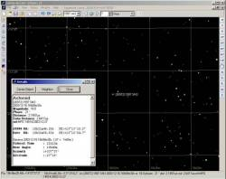
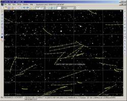

 Il est maintenant possible d'afficher tout les astéroides connus jusqu'à une magnitude définie sur les cartes.
Pour rendre cela possible, une base de donnée est utilisée pour enregistrer et retrouver rapidement les éléments de plus de 200'000 asteroides du fichier MPCORB.
Comme il n'y a toujours pas de documentation je donne quelques explication ici.
La première étape est de charger le fichier MPCORB dans la base de donnée. Une sélection simplifiée est possible si vous ne voulez pas le fichier complet. Comme les éléments changent avec le temps il est possible d'en conserver plusieurs versions. Le programme utilisera toujours les plus proches de la date courante.
Le fichier est disponible depuis :
ftp://cfa-ftp.harvard.edu/pub/MPCORB/
Si vous avez des difficulté pour vous connecter lisez les informations au millieux de cette page:
cfa-http://www.harvard.edu/iau/mpc.html
Ensuite un calcul est fait de la magnitude de chaque astéroide pour le premier de chaque mois. Cela permet au programme d'éliminer ceux qui sont trop faible pour l'observation et ainsi d'accelerer le calcul.
Ce processus peut être lent à cause du volume de donnée à traiter, je vous conseil de le faire juste avant d'aller manger!
C'est tout pour la preparation des données.
 Quand une nouvelle date est choisie la position de tout les astéroides plus brillant que la limite est calculée pour 0h TU. Cela prend environ 5 secondes jusqu'à la magnitude 18, et 15 secondes jusqu'à la magnitude 20.
Cette position est utilisée pour savoir quels asteroides sont sur la carte, pour ceux-ci la position precise à l'heure d'observation est calculée en une fraction de seconde.
Vous pouvez utiliser la boite de recheche pour localiser n'importe quel astéroide de la base de donnée, entrez le numéro ou une partie du nom de l'astéroide.
Cet astéroide est ajouté temporairement à la liste journalière même si sa magnitude est plus faible que la limite. C'est un moyen simple pour ajouter quelques objets faible à la carte.
Pour utiliser cette nouvelle fonction il faut installer le serveur de base de donnée MySQL version 4.
Un paquet d'installation simplifié est disponible pour Windows si vous ne le possédez pas encore.
Pour Linux je propose que vous utilisiez la version disponible avec votre distribution, ou que vous le téléchargiez depuis www.mysql.com si il n'est pas à la version 4.0. Plus précisement c'est la librarie client qui doit être à la version 4.0, le serveur lui-même peut être d'une autre version.
Au premier lancement du programme celui-ci vous demande les paramètres de connexion pour la base de donnée. Je conseil de créer une nouvelle base avec le bouton correspondant, ceci charge également un fichier d'exemple avec 1000 asteroides.
Si vous ne voulez pas utiliser cette fonction cliquez sur Cancel pour désactiver l'affichage des astéroides.
Le calcul de l'ensemble de ces données peut poser des problèmes si le processeur de votre machine n'est pas assez puissant. Dans ce cas limitez le nombre d'objet chargé depuis le fichier.
J'ai aussi remarqué que, sur la même machine, le calcul est de deux à trois fois plus lent avec Windows 98 qu'avec Windows 2000 ou Linux.
{kind=link}
{kind=link}